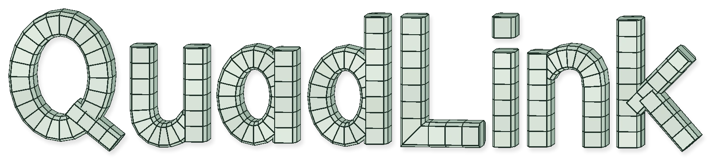
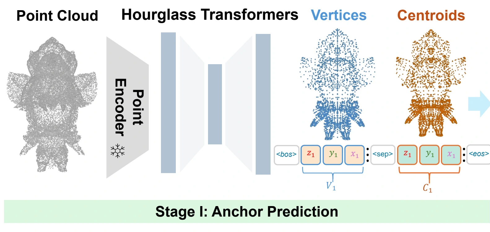
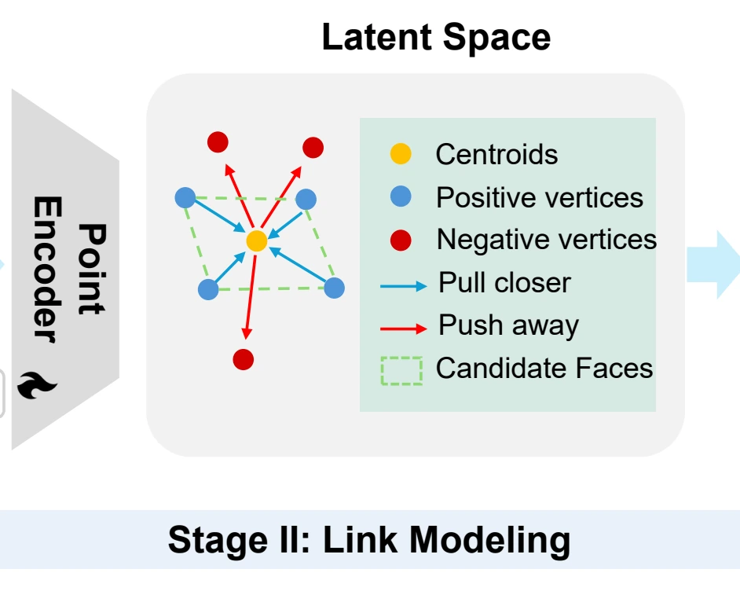
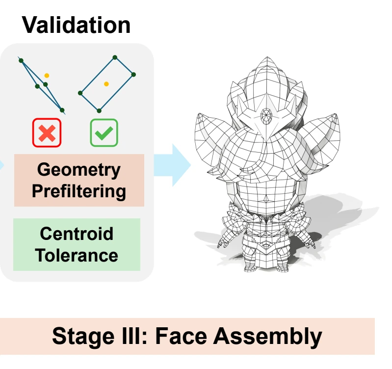
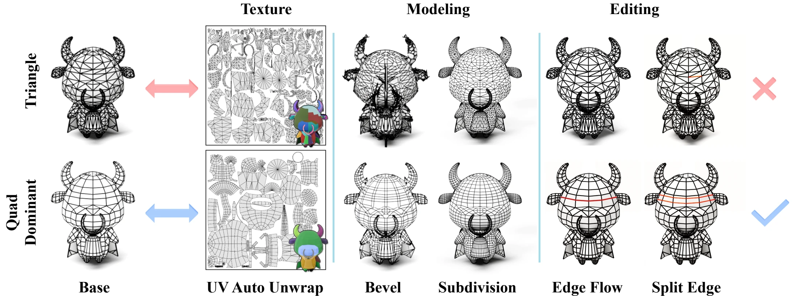
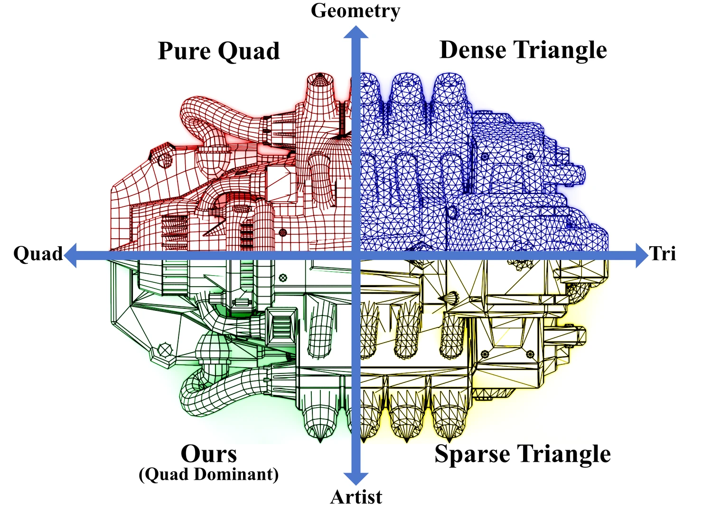

Autoregressive Quad-Dominant Mesh Generation via Point-Relation Learning
† Corresponding authors
3D Gallery
Browse QuadLink's 3D cases by model category. Topology view shows the original polygon boundaries.
Abstract
The generation of production-ready quad-dominant meshes is a cornerstone of modern 3D content creation. Generating anisotropic quad-dominant meshes from point clouds is challenging, as existing methods are typically limited to producing either pure triangular meshes or pure quadrilateral meshes with isotropic densities. In this paper, we present QuadLink, a unified framework consisting of three stages for quad-dominant mesh generation by linking points into structured faces. QuadLink formulates polygonal mesh generation as a hybrid centroid-conditioned vertex linking model: it first predicts a unified set of anchors (vertices and face centroids), then learns centroid-conditioned links that associate vertices with face centroids, and finally assembles polygonal faces with a quad-first strategy guided by robust geometric verification strategies. This link-based formulation avoids repeatedly encoding shared vertices across faces, which enables robust and efficient generation of sparse and anisotropic quad-dominant meshes with coherent edge flow and shorter autoregressive token sequences. To construct training data for this model, we further introduce a detailed Tri-to-Quad Operator that converts artistic triangle meshes into quad-dominant training data via geometry prefiltering and global merge selection. Extensive experiments show that QuadLink produces production-ready quad-dominant meshes from point clouds and achieves improved geometric fidelity and topological quality compared to prior baselines. Meanwhile, our method natively supports hybrid polygonal topology, generalizing to arbitrary n-gon meshes without architectural changes.
Method Overview
QuadLink reconstructs polygonal surfaces from point clouds in three stages.
-

Encode the input point cloud and predict a token sequence of vertices and face centroids.
-

Learn centroid-to-vertex links that group vertices into candidate faces.
-

Validate candidate faces and assemble quads first, with triangle fallback.
Why quad-dominant meshes?
Artist-designed quad-dominant meshes support editable edge flow and preserve triangles where complex topology requires them.


Data Curation
Tri-to-Quad Operator codeExplore quad-dominant meshes produced by our Tri-to-Quad Operator from artist-designed triangle meshes.
BibTeX
@article{zhang2026quadlink,
title={QuadLink: Autoregressive Quad-Dominant Mesh Generation via Point-Relation Learning},
author={Zhang, Yiheng and Zhu, Zhe and Shen, Tingrui and Cai, Zhuojiang and Li, Tianxiao and Zhao, Zixing and Dong, Qiujie and Dou, Zhiyang and Wang, Jiepeng and Wan, Le and others},
journal={arXiv preprint arXiv:2605.16813},
year={2026}
}